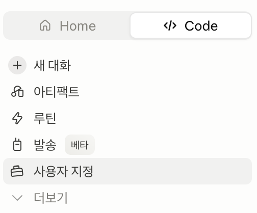

먼저, MCP가 뭔가요
MCP(Model Context Protocol)는 AI 앱이 외부 도구에 접속하는 공용 규격입니다. 노트북에 USB-C 단자 하나만 있으면 충전기도 모니터도 꽂히듯, AI 앱은 MCP 하나로 여러 도구를 붙입니다. 아래 여섯 예제도 모두 이 방식으로 연결합니다.
그러면 원래 쓰던 API와는 무엇이 다를까요. 세 장으로 나란히 비교했습니다.
구글 드라이브를 Claude에 커넥터로 붙여, 드라이브의 문서·스프레드시트·PDF를 Claude가 직접 찾아 읽습니다. 파일을 일일이 붙여넣지 않아도 "내 드라이브에서 ○○ 찾아줘"로 바로 씁니다.
핵심 스텝
-
① 커넥터 둘러보기 열기사용자 지정(Customize) → 커넥터 → 커넥터 둘러보기 Claude Desktop을 열고 왼쪽 사이드바에서 사용자 지정(Customize)을 누릅니다. 아래 그림의 자리입니다.

Claude Desktop 왼쪽 사이드바의 사용자 지정(Customize) 메뉴 -
② Google Drive 커넥터 추가검색창에 Google Drive → + 추가 → 연결 검색창에 Google Drive를 입력해 나온 카드에서 + 추가를 누르고 연결을 누릅니다.
-
③ Google 계정 로그인과 권한 동의열린 창에서 Google 계정으로 로그인하고 접근 권한에 동의합니다. 회사 구글 계정이면 관리자가 커넥터를 열어두어야 이 화면이 끝까지 넘어갑니다.
-
④ 연결 확인내 구글 드라이브에서 지난달 회의록 문서를 찾아 3줄로 요약해줘. 새 대화에서 위 질문을 그대로 보냅니다. 드라이브의 문서를 찾아 답하면 연결된 것입니다.
먼저 playmcp.kakao.com에서 회원가입하고 도구함에 쓸 도구를 담은 다음, Claude Desktop에 PlayMCP 커넥터를 붙입니다. 그러면 작업 요약을 카카오톡 나와의 채팅방으로 보내고, PlayMCP 하나로 검색·지도·유튜브·공시 도구까지 함께 씁니다.
핵심 스텝
-
① PlayMCP에 카카오 계정으로 로그인playmcp.kakao.com에 접속해 카카오 계정으로 로그인합니다. 카카오톡을 쓰는 계정이면 회원가입 없이 바로 들어갑니다.
-
② 도구함에 쓸 도구 담기로그인하면 도구함이 보입니다. 여기에 쓸 도구를 먼저 담아 둡니다. 아래 목록을 반드시 포함합니다.🧰 STEP 2에서 도구함에 반드시 넣을 도구
- 카카오톡 나와의 채팅방으로 요약과 알림을 나에게 보냅니다.필수
- 네이버 검색으로 뉴스와 블로그, 웹 문서를 실시간으로 찾습니다.
- 카카오맵으로 장소를 찾고 길을 안내받습니다.
- YouTube Data로 영상과 채널, 자막, 통계를 분석합니다.
- OpenDART로 기업 공시와 재무 데이터를 조회합니다.
- 법률절차 길잡이로 상황에 맞는 법률 절차를 안내받습니다.
-
③ 커넥터 둘러보기 열기사용자 지정(Customize) → 커넥터 → 커넥터 둘러보기 Claude Desktop을 열고 왼쪽 사이드바에서 사용자 지정(Customize)을 누릅니다. 아래 그림의 자리입니다.
Claude Desktop 왼쪽 사이드바의 사용자 지정(Customize) 메뉴 -
④ PlayMCP 커넥터 추가검색창에 playmcp → + 추가 → 연결 검색창에 playmcp를 입력해 나온 카드에서 + 추가를 누르고 연결을 누릅니다.
-
⑤ 카카오 계정 로그인과 권한 동의연결 창에서 카카오 계정으로 로그인하고 권한에 모두 동의합니다. 이러면 준비가 끝납니다.
-
⑥ 연결 확인카카오톡 나와의 채팅방으로 "PlayMCP 연결 테스트 완료"라고 보내줘. 새 대화에서 위 메시지를 보냅니다. 카카오톡 나와의 채팅방에 그대로 도착하면 연결된 것입니다.
GitHub에서 DART 공시 분석 스킬을 내려받아 Claude Code에 설치하면, /dart 종목명 한 줄로 그 기업의 재무와 공시를 분석한 HTML 리포트를 받습니다. 13인 투자자 페르소나 평가까지 담깁니다.
dart 스킬 · github.com/airoasting/dart ›claude로 켠 Claude Code 안에서 진행합니다. 설치는 자연어로 부탁하면 Claude가 알아서 받아 설치합니다.핵심 스텝
-
① DART 스킬 설치https://github.com/airoasting/dart 다운로드 받은 다음, 클로드 스킬로 설치해주세요. Claude Code에 위 문장을 그대로 입력합니다. GitHub 주소를 받아 Claude가 알아서 내려받고 설치합니다.
-
② OpenDART API 키를 .env에 등록# 프로젝트 루트/.env DART_API_KEY=발급받은_40자_키_붙여넣기 opendart.fss.or.kr에서 무료 40자 API 키를 받아 프로젝트
.env에 넣습니다. -
③ 리포트 생성/dart 카카오 Claude Code에서 /dart 종목명을 실행하면
output/폴더에 HTML 리포트가 만들어집니다. 종목명만 바꾸면 어떤 상장사든 리포트가 나옵니다. 분기도 지정할 수 있습니다. 예:/dart 삼성전자 1Q2026. 매일 아침 자동으로 받고 싶으면 아래 텔레그램으로 메시지 주고 받기와 루틴을 함께 씁니다.
법제처 Open API를 감싼 커스텀 커넥터를 붙여, 법령·판례·조례를 실시간으로 검색하고 원문으로 검증합니다. Claude가 지어내지 않고 근거를 인용하도록 환각을 잡아 줍니다. 이 커넥터는 아래 오픈소스 MCP를 그대로 씁니다.
korean-law-mcp 스킬 · github.com/chrisryugj/korean-law-mcp ›핵심 스텝
-
① 법제처 OC 키 발급open.law.go.kr → OPEN API → 활용 신청 → 마이페이지 open.law.go.kr에 접속해 회원가입한 뒤 활용 신청을 하고, 마이페이지에서 OC 키를 확인합니다. OC 키는 보통 이메일 아이디와 같은 짧은 영문입니다.
-
② 커스텀 커넥터 추가 열기사용자 지정 → 커넥터 → 커스텀 커넥터 추가 Claude Desktop을 열고 위 순서로 들어갑니다.
-
③ 이름과 MCP 주소 입력https://korean-law-mcp.fly.dev/mcp?oc=YOUR_OC_KEY 이름은 알아보기 쉽게(예: Korean-Law) 적고, 주소 칸에 위 MCP 주소를 붙입니다. 맨 뒤
YOUR_OC_KEY만 본인 OC 키로 바꿉니다. 예를 들어 OC가honggildong이면 최종 주소는https://korean-law-mcp.fly.dev/mcp?oc=honggildong이 됩니다. 주소는 반드시 https로 시작해야 합니다. -
④ 저장하고 도구 확인저장하면 잠시 뒤 search_law, get_law_text 같은 도구가 나타납니다. 이러면 연결된 것입니다.
-
⑤ 첫 검색 테스트근로기준법 제60조 연차유급휴가 조문 본문을 그대로 보여줘. 출처는 법제처 데이터로 검증해서. 새 대화에서 위 질문을 그대로 보냅니다. 조문 본문과 출처가 함께 나오면 연결된 것입니다.
Liner의 원격 MCP 서버를 커스텀 커넥터로 붙여, Claude가 출처가 달린 웹 검색과 논문 검색, 딥 리서치를 Liner로 돌립니다. 답마다 근거 링크가 따라오므로 보고서에 옮기기 전에 원문을 바로 확인할 수 있습니다. 로그인은 브라우저에서 Liner 계정으로 한 번만 합니다.
Liner 공식 플러그인 · github.com/liner-engineering/liner-claude-plugin ›핵심 스텝
-
① 커스텀 커넥터 추가 열기사용자 지정 → 커넥터 → 커스텀 커넥터 추가 Claude Desktop을 열고 위 순서로 들어갑니다.
-
② 이름과 MCP 주소 입력https://platform.liner.com/api/v1/mcp 이름은
Liner로 적고, 주소 칸에 위 주소를 그대로 붙입니다. 법령 MCP와 달리 주소 뒤에 키를 붙이지 않습니다. 인증은 다음 단계의 로그인이 맡습니다. -
③ 연결을 누르고 Liner 로그인추가한 커넥터의 연결을 누르면 브라우저에 Liner 로그인 창이 열립니다. Liner 계정으로 로그인하고 접근을 허용합니다. 키를 채팅에 붙이지 않습니다. 토큰은 로그인 과정에서 Claude가 알아서 받아 보관합니다. 키나 토큰을 대화창이나 설정 파일에 직접 적지 마세요.
-
④ 도구 확인연결되면 search_web(웹 검색), search_scholar(논문 검색), search_agent(출처를 단 종합 답), quick_answer_agent(짧은 사실 확인), deep_research_agent(여러 단계 리서치) 다섯 도구가 보입니다.
-
⑤ 첫 검색 테스트Liner로 최근 AI 검색 서비스 동향을 찾아서, 출처 링크를 단 5줄 요약으로 정리해줘. 새 대화에서 위 질문을 그대로 보냅니다. 문장마다 출처 링크가 달려 나오면 연결된 것입니다. 논문이 필요하면 "Liner 논문 검색으로"라고 덧붙입니다.
자리를 비운 사이에도 휴대폰 텔레그램으로 지시를 보내고 결과를 받습니다. 일은 내 컴퓨터의 Claude Code가 하고, 텔레그램 봇은 그 사이를 오가는 창구 역할만 합니다. 그래서 컴퓨터를 켜 두고 Claude Code를 실행해 둔 동안에만 작동합니다.
핵심 스텝
-
① Claude Code 설치 확인터미널을 열어
claude를 입력했을 때 명령을 찾을 수 없다고 나오면 아직 설치되지 않은 것입니다. 체크리스트 1단계에서 Node.js와 Claude Code를 설치하고 돌아옵니다. 체크리스트 1단계 · Claude Code 설치하기 › -
② Bun 설치Bun은 Claude Code를 설치할 때 쓴 npm 대신 자체 설치 명령을 씁니다. 그 명령이 맥과 윈도우에서 다르므로, 아래에서 내 컴퓨터에 맞는 쪽을 골라 씁니다. 이 명령은 Claude Code 안이 아니라 터미널에 바로 넣습니다. 1번에서
claude를 켜 두었다면/exit로 나오거나 새 창을 엽니다. 윈도우 · 시작 메뉴에서 Windows PowerShell을 열고 아래 명령어를 붙여넣습니다 irm bun.sh/install.ps1 | iex 맥 · 터미널을 열고 아래 명령어를 붙여넣습니다 curl -fsSL https://bun.sh/install | bash 설치가 끝나면 창을 껐다 켜고bun --version을 입력해 봅니다. 버전 숫자가 나오면 성공입니다. 윈도우에서 붙여넣기가 Ctrl+V로 안 되면 마우스 우클릭을 쓰세요. -
③ BotFather로 봇 만들고 토큰 받기텔레그램 앱에서 @BotFather를 찾아 대화를 엽니다.
/newbot을 보내고 안내에 따라 봇 이름과 봇 아이디(my_assistant_bot처럼bot으로 끝나야 합니다)를 정하면, 숫자로 시작하는 긴 문자열을 줍니다. 이것이 토큰, 즉 내 컴퓨터가 이 봇을 움직일 때 쓰는 비밀번호입니다. 통째로 복사해 둡니다. 텔레그램에서BotFather로 검색하면 이름이 비슷한 가짜 봇이 여럿 나옵니다. 이름 옆에 파란 인증 마크가 붙은 계정을 골라야 합니다. @BotFather 열기 › -
④ 텔레그램 플러그인 설치 (최초 1회)/plugin install telegram@claude-plugins-official 터미널에서
claude를 입력해 Claude Code를 켭니다. 그 안에서 위 명령으로 텔레그램 플러그인을 설치합니다. 이 설치는 한 번만 하면 됩니다. 설치가 끝나면 Claude Code를 한 번 껐다 켭니다. 그래야 Claude Code가 다음 단계의/telegram:명령과--channels옵션을 알아봅니다.회사 계정이면 이 설치가 막혀 있을 수 있습니다. 팀 요금제나 엔터프라이즈 요금제는 관리자가 설치 가능한 플러그인 목록을 미리 정해 둘 수 있습니다. 그러면 위 명령을 실행해도 설치가 거부되거나,/plugin목록에 텔레그램이 아예 보이지 않습니다. 회사 노트북에 IT가 배포한 설정이 걸려 있는 경우도 같습니다.
이 경우, 사내 IT나 Claude 관리자에게telegram플러그인 허용을 요청하거나, 회사 자산이 아닌 개인 계정과 개인 컴퓨터에서 사용합니다. -
⑤ 토큰을 Claude Code에 등록/telegram:configure <토큰> Claude Code를 켜고 위 명령을 붙여넣습니다.
<토큰>부분을 지우고 그 자리에 3번에서 복사해 둔 토큰을 붙여 실행합니다. 제대로 된 토큰은 숫자로 시작해 콜론(:)이 하나 있고, 그 뒤로 영문과 숫자가 길게 이어집니다.봇 토큰은 비밀번호와 같습니다. 공개된 곳에 올리지 않습니다. 토큰은 내 컴퓨터의~/.claude/안에만 저장됩니다. 혹시 노출되면 BotFather에서/revoke로 새 토큰을 다시 받습니다. -
⑥ 텔레그램과 연결한 상태로 Claude Code 실행claude --channels plugin:telegram@claude-plugins-official 터미널을 새로 열고 위 명령으로 Claude Code를 켭니다. 뒤에 붙은
--channels가 텔레그램과 이어 주는 통로를 함께 엽니다. 텔레그램을 쓰려면 Claude Code를 켤 때마다 이 명령으로 실행합니다.claude만 입력하면 텔레그램과 연결되지 않습니다. -
⑦ 봇에게 메시지를 보내 확인 코드 받기내 텔레그램에서 방금 만든 봇을 찾아 아무 메시지나 보냅니다. 봇은 아직 내가 주인인지 모르기 때문에 메시지를 Claude Code로 넘기지 않고, 6자리 확인 코드부터 보내 줍니다. 숫자와 a부터 f까지의 영문이 섞인 코드입니다.봇은 다음 단계에 붙여 넣을 명령까지 통째로 적어 답장합니다. 그대로 복사해 쓰면 됩니다. 코드는 1시간 뒤 만료되고, 지났으면 메시지를 다시 보내 새로 받습니다.
-
⑧ 내가 주인이라고 알려 주기/telegram:access pair <확인코드> Claude Code 화면으로 돌아와 위 명령을 붙여넣고,
<확인코드>자리에 방금 받은 6자리 코드를 넣어 실행합니다. 이제 봇이 내 메시지를 Claude Code로 넘겨 줍니다. 이 코드를 넣은 사람만 봇을 쓸 수 있습니다. 다른 사람이 봇 주소를 알아내 말을 걸어도 내 Claude Code에는 닿지 않습니다. -
⑨ 봇 대화창에서 연결 확인하기테스트 텔레그램 봇 대화창에 위 메시지를 보냅니다. Claude Code 화면에 그 메시지가 그대로 도착하면 연결에 성공한 것입니다.메시지가 도착하지 않는다면6번 명령(
--channels)으로 Claude Code를 켰는지, 8번 확인 코드를 제대로 넣었는지 확인해 봅니다. 그래도 안 되면 터미널에서bun --version을 입력해서 Bun이 설치되었는지 확인합니다. -
⑩ 모르는 사람에게 코드가 나가지 않게 막기/telegram:access policy allowlist 지금까지의 설정에서는 낯선 사람이 봇에게 말을 걸면 봇이 그 사람에게도 확인 코드를 보내 줍니다. 7번에서 내가 받은 것과 같은 코드입니다. 내 연결은 9번에서 이미 확인했으니 더는 필요 없습니다. 위 명령을 실행하면 코드 발급이 멈추고, 등록해 둔 나만 봇을 쓰게 됩니다.
각 도구의 화면 구성과 메뉴 이름은 업데이트에 따라 바뀔 수 있습니다. 외부로 메시지나 데이터를 보내는 연결은 되돌리기 어려우니, 민감한 정보를 다룰 때는 사람이 한 번 확인하는 절차를 두고 사내 보안 정책을 함께 확인하시기 바랍니다.
하나만 골라 작게 시작해 보세요
여섯 예제 모두 10~15분이면 첫 연결을 만들 수 있습니다. 지금 가장 끌리는 카드를 펼쳐 그 자리에서 따라가면 됩니다.